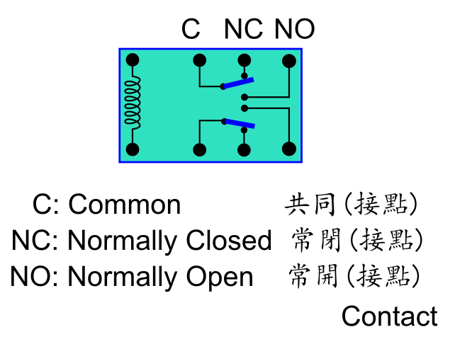
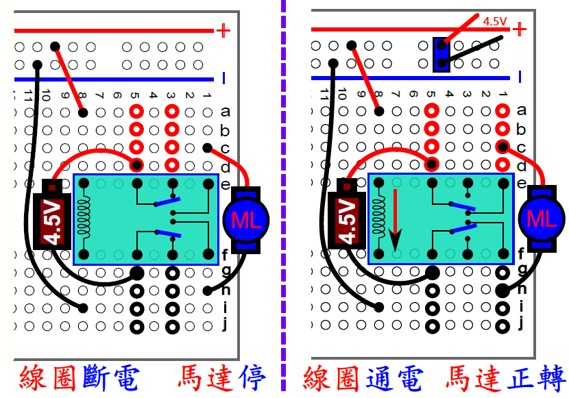
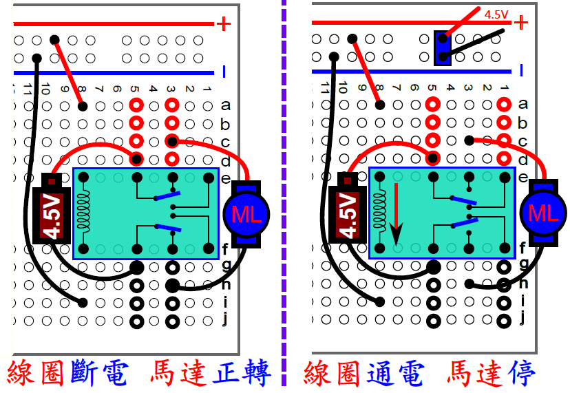
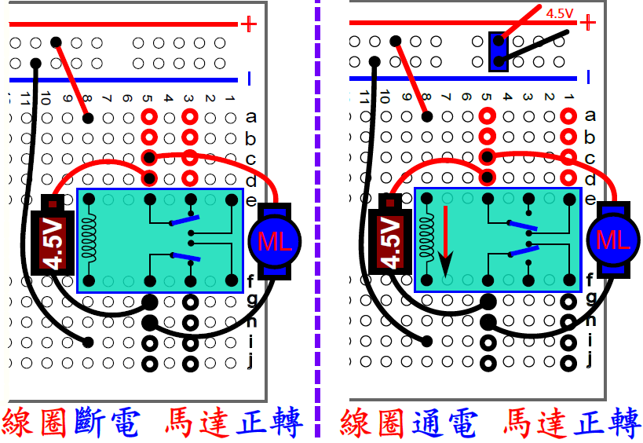
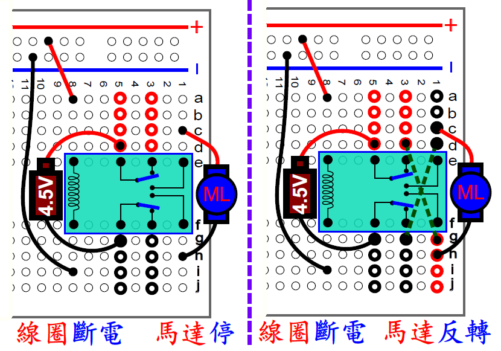
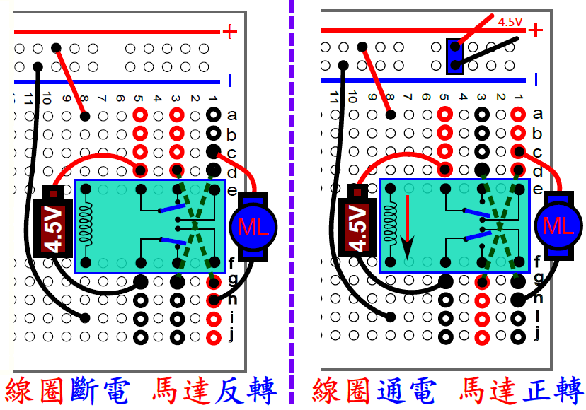
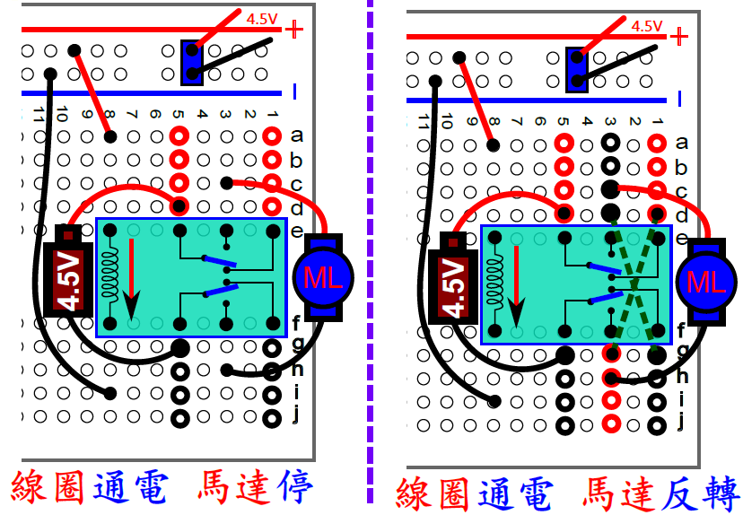
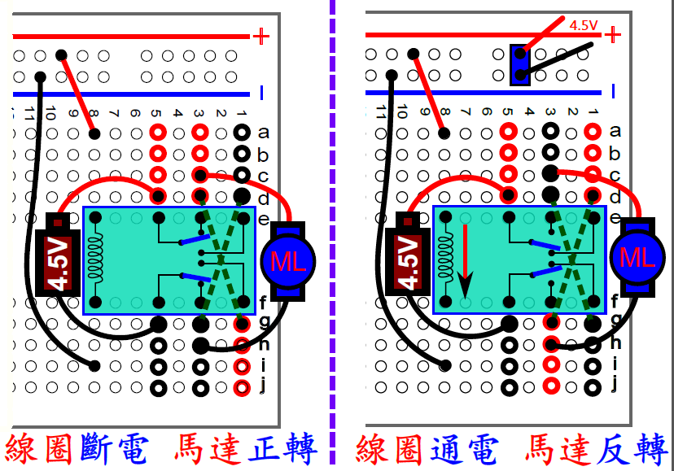

| 繼電器(Relay) |
 |
|
 線圈斷電馬達停，線圈通電馬達反轉。要如何接? |
 線圈斷電馬達反轉，線圈通電馬達停。要如何接? |
 |
| 結論: 電源(馬達用)一律紅線接於5上，黑線接於5下： a.線圈不通電，馬達不轉， 則馬達應接於1。 b.線圈不通電，馬達轉， 則馬達應接於3。 c.線圈通或不通電，馬達都會轉， 則馬達應接於5。 |
如何讓線圈斷電時馬達由停變反轉?  架上天橋後:  |
| 如何讓線圈通電時馬達由停變反轉?  架上天橋後:  |